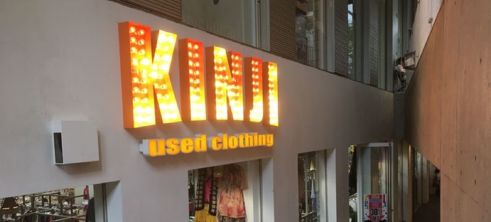
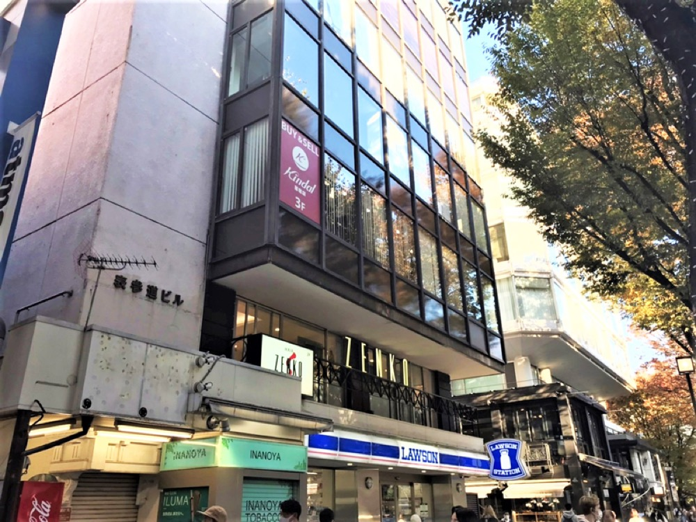

THE AREAHarajuku Station (Takeshita Exit) or Meiji-jingumae Station — the shops split between Cat Street, Takeshita-dori and the Omotesando side streets.
STATIONHarajuku — JR Yamanote Line · Meiji-jingumae (Chiyoda / Fukutoshin Lines)
ON FOOTThe priciest vintage in Tokyo: museum-grade American denim at BerBerJin, huge imported floors at JAM and Chicago, designer resale at Kindal and KINJI. All five shops sit within a 10-minute walk of each other.
Tokyo's most famous vintage denim shop, going since 1998. Museum-grade Levi's and American classics — prices match the quality, but even window-shopping here is an education.
1:00 PM – 7:00 PM6 min walk · Harajuku Sta.Google ★3.9 · 164 reviews
HUGE IMPORT FLOOR
JAM Harajuku
6-28-5 Jingumae, Shibuya-ku, Tokyo
Outside 1/3
A basement the size of a warehouse: row after row of imported vintage, sorted by genre, with prices below the Harajuku average. Easy to lose an hour here.
11:00 AM – 8:00 PM5 min walk · Harajuku Sta.Google ★4.5 · 156 reviews
AMERICAN CASUAL · KIMONO
Chicago Harajuku
6-31-15 Jingumae, Shibuya-ku, Tokyo
Outside
The classic Harajuku thrift stop on Meiji-dori: American casual at fair prices, and a famous kimono corner — vintage kimono and yukata make great souvenirs.
11:00 AM – 8:00 PM2 min walk · Harajuku Sta.Google ★4.4 · 123 reviews
HUGE SELECTION
KINJI Harajuku
4-31-10 Jingumae, Shibuya-ku, Tokyo

Outside
30,000+ items in a basement by Laforet Harajuku: used and vintage mixed, priced for digging. One of the biggest single floors in Harajuku.
11:00 AM – 8:00 PM4 min walk · Harajuku Sta.
DESIGNER RESALE
Kindal Harajuku
4-29-3 Jingumae, Shibuya-ku, Tokyo

Outside
Designer brand resale on Omotesando — Comme des Garçons, Margiela, Supreme and watches, authenticated and neatly graded. Above the Lawson, on the 3rd floor.
11:00 AM – 8:00 PM5 min walk · Harajuku Sta.
Good to know
Cash still matters. Most chains take cards and IC, but small vintage shops may be cash only — carry a few thousand yen.
Condition is graded on the tag. Japanese second-hand shops grade strictly; a B-rank here is often cleaner than "like new" elsewhere.
Tax-free: larger chains (2nd STREET, TREASURE FACTORY, Kindal) do tax-free for visitors — bring your passport.
Shimokitazawa and Koenji are dense enough to wander. The other areas reward a plan: check the OPEN NOW switch before you go.